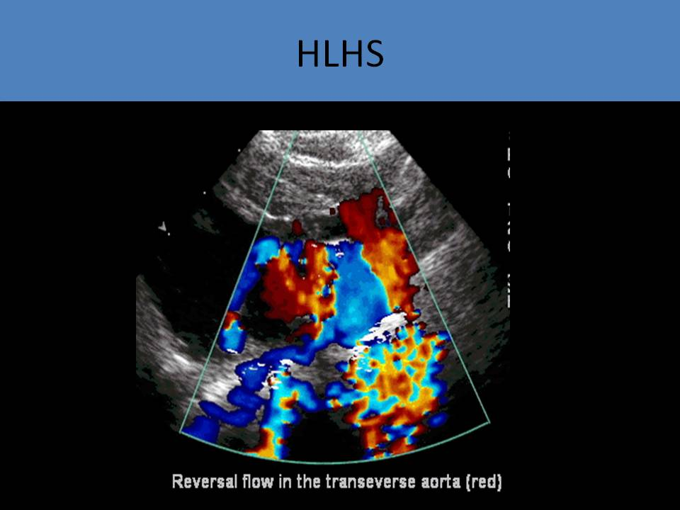

.jpg)
hypoplastic left heart syndrome
General Information:
- Most severe type of obstructive left sided lesion
- Autosomal recessive inheritance pattern with about 20% of patients having a first degree relative with CHD
- Associated with abnormal nuchal translucency thickness
- Associated syndromes: Turner syndrome, trisomy 13
- Associated drug use: trimethadione, valproic acid
- Caused by abnormalities of intracardiac blood flow
- Underdeveloped left ventricle (may be no discernable LV)
- Normal LV demonstrates inlet, apical, outlet regions, in HLHS- all 3 regions poorly developed
- Severe aortic valve hypoplasia or atresia
- If aortic atresia is present with a normal left ventricle, HLHS is not diagnosed, only aortic atresia
- Ascending aorta varies in size and is often hypoplastic
- An abnormal mitral valve is always present; hypoplasia or atresia
- Left atrial formation is not affected by HLHS
- Coarctation present in 80% of the patients; ductal dependent systemic circulation
- Often associated with unbalanced atrioventricular septal defect
- Ductus arteriosus is patent but the foramen ovale is commonly closed due to left sided hypoplasia
- Most common cause of death from CHD in newborns
- Live births develop cyanosis 2-5 days after birth
- Prostaglandin E can be used to maintain ductal patency until surgical intervention is performed
- Three step corrective procedure; Norwood, bidirectional Glenn shunt and Fontan procedure
- Cardiac position and axis is usually normal
- Abnormal four chamber view
- There is strong association with a restrictive foramen ovale, left ventricular filling and underdevelopment of left ventricle
- Identify the moderator band to determine the right ventricle and confirm the left side is hypoplastic
- The right ventricle will form the apex of the heart (instead of the left ventricle)
- Short axis view of the great vessels can be used to assess aortic atresia/hypoplasia and enlarged pulmonary artery
- Short axis view of the ventricles can demonstrate the discrepancy in size between the two chambers
- Views of the aortic arch and descending aorta are performed to assess for hypoplasia
- Coarctation is the most common associated finding
- Hypoplastic aortic arch is also common
- Left ventricular size depends on degree of mitral disease
- Slit like left ventricle is associated with mitral atresia, aortic atresia
- Associated with endocardial fibroelastosis (thickening of the innermost lining of the endocardium due to an increase in the amount of supporting connective tissue and elastic fibers)
- Poorly contractile left ventricle is associated with mitral hypoplasia, aortic hypoplasia
- Important to determine absence of forward flow through the mitral valve and aortic valve using PW Doppler
- Usually no antegrade flow across the aortic valve
- No antegrade or minimal mitral valve flow
- If MV flow detected there will be significantly reduced E and A velocities with a small waveform
- Retrograde filling from the ductus arteriosus to the aorta to supply the coronary arteries with blood
- Dilated ductus arteriosus
- Flow in the aortic isthmus will be reversed
- Ductal dependent lesion after birth; ductus and foramen ovale assessment is imperative to determine patency
- Foramen ovale should be examined as part of routine exam
- Left to right shunting (reversal of normal flow direction)
- Can be restrictive or intact
- Restrictive foramen ovale indicates poor prognosis
- Abnormal pulmonary venous flow pattern demonstrated with pulsed Doppler
- Increased reversal flow in the pulmonary veins reflects a high pressure in the left atrium, severe pulmonary vascular disease and poor postnatal prognosis
- If the atrial septum is intact, there might be anomalous venous return draining into the left atrium
- Tricuspid valve function: regurgitation is common and needs to be quantified
- Dilated right ventricle, right atrium, main pulmonary artery, branch pulmonary arteries
- The right ventricle is usually enlarged and can be hypertrophic due to increased blood volume and pressure
- The fetus should also be evaluated for signs of congestive heart failure and hydrops
- If skin edema, ascites and pleural or pericardial effusion are present, or premature closure of the foramen ovale, endocardial fibroelastosis should be suspected


Hypoplastic left ventricle
Hypoplastic left ventricle - Slit-like left ventricle